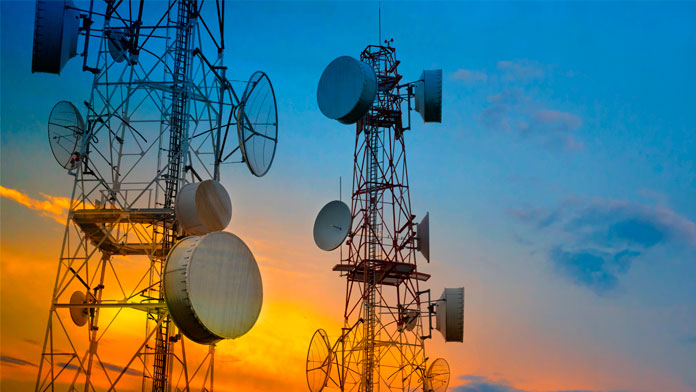

Nuestros Servicios Globales
Profesionales en todos nuestros servicios
Telecomunicaciones

Gestión Documental
Desarrollo WEB
Mantenimiento de Equipos de Cómputo

Nosotros y Nuestro compromiso
En TELEDOC L&L SOLUTIONS, nos dedicamos a llevar la conectividad y la eficiencia a un nuevo nivel. Somos más que una empresa de servicios de telecomunicaciones y gestión documental: somos el motor que impulsa la productividad y la comunicación fluida en su máxima expresión.
Nuestro compromiso radica en ofrecer soluciones integrales y personalizadas que se adapten a las necesidades específicas de cada cliente. Con una combinación perfecta entre tecnología de vanguardia y atención al cliente excepcional, nos esforzamos por ser el aliado confiable que simplifica la complejidad, optimiza los procesos y potencia el crecimiento empresarial.
Profesionales en todos nuestros servicios
Telecomunicaciones
Gestión Documental
Desarrollo WEB
Mantenimiento de Equipos de Cómputo
◆ Telecomunicaciones
Nuestras Razones
◆ Gestión Documental
Nuestras Razones
◆ Desarrollo Web
Nuestras Razones
◆ Mantenimiento de Equipos de Cómputo
Nuestras Razones